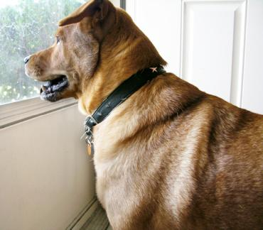

Is your dog driving you to distraction? Are his behavior problems embarrassing, frustrating, or just plain destructive? No matter what undesirable behavior your dog is performing, there are a number of training techniques, issues to consider, and perspectives to ponder that may help so you can stop pulling out your hair.
Keeping a very close eye on your dog goes a long way. For example, if your dog’s issue is poor housetraining, keep an eye out for that “gotta go” behavior. If you hussle your dog outside every time he is about to go in the house, he will eventually get the point and stop going in the house. If your dog’s behavior issue is humping other dogs, watch him whenever he is with other dogs. Get to know how he behaves when he is about to mount and stop him before he starts. If you give him a loud “Eh! Eh!” before he makes contact with the other dog, and do so every time, he will learn that he is not to hump. This method works on almost all inappropriate dog behavior, but it requires that you be truly diligent.
Every action is a sequence of more simple behaviors. If your dog makes a habit of jumping up when you come home, the sequence he is performing is something like this:
You must train your dog to alter this chain. A more desirable chain of behavior would be:
You can train your dog to perform this behavior, first, by never acknowledging your dog when he is being excited or jumping up. Knowing he cannot get attention from you in this way is half the battle. You can also train your dog to come, sit, and wait by the door whenever he hears keys in the lock. Sit near the front door with your dog and have a helper outside. Ask your helper to jingle your keys in the lock, and immediately ask your dog to sit and stay. Have him hold his sit stay until your helper comes inside, then shower him with praise and treats. Do this over and over and he’ll understand that affection and reward come to dogs who wait patiently.
Many dog behavior problems arise because the owner is inadvertently rewarding negative behavior. When your dog jumps on you, do you pet him? If your dog is overly excited when you get home, do you take him straight out for a walk? Do you feed your dog snacks when he begs? All these actions teach your dog that he is asking for what he wants in the right way, because it is working. If you want bad behaviors to stop, you absolutely cannot reinforce them.
Some behaviors are referred to as “self rewarding,” this means the behavior itself is providing the motivation to repeat the action. Self rewarding behaviors include drinking from the toilet, digging, and knocking over the trash can. The best way to stop these behaviors is to remove the motivator. Keep the bathroom door closed, don’t leave your dog out unattended, and store your trash can behind a child lock under the sink—problem solved.
So much of what makes dogs act out is excess energy. Take your dog for a nice, long walk twice a day and you won’t believe the behavior difference. Most dogs were bred with a particular type of work in mind. These dogs were not meant to spend all day in a crate, and then lay at your feet all evening. They need to feel fulfilled as well as cared for. Walking your dog once in the morning and once in the evening will go an extremely long way towards a happier, better behaved pooch.
Employing the Nothing in Life Is Free (NILIF) method of training will help with any aspect of bad behavior. The principle behind NILIF is that your dog must learn to associate all good things with you, and understand that he must always work for what he wants. You, as the pack leader, control everything from food, to play, to affection. Your dog is never rewarded for seeking attention, or begging for food or play time. Every reward must follow a trick or desirable behavior, and everything given to your dog is on your terms. Read our NILIF article to learn more and have your dog behaving better in no time.